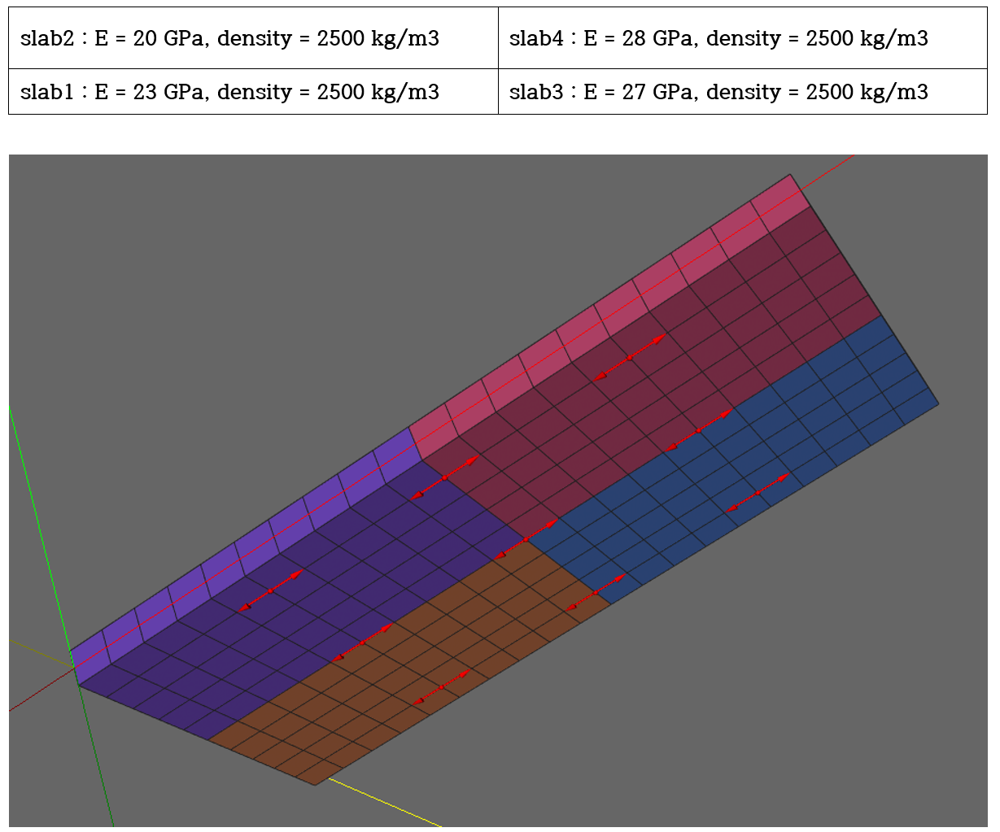
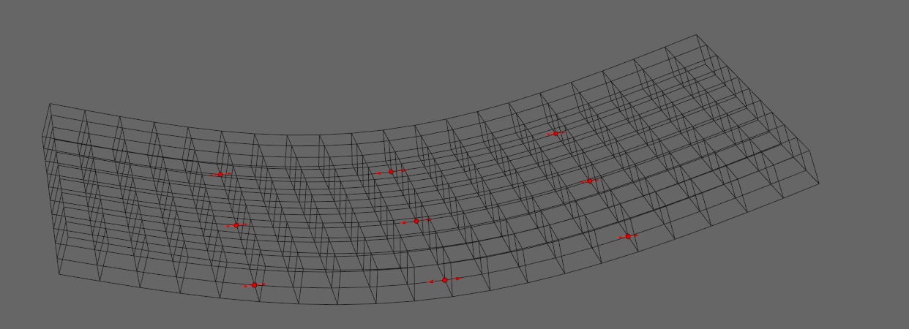
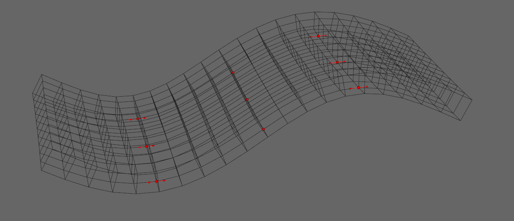

E.15 ModelUpdating and ShapeEstimation Steps
E.15.1 Model Updating Step
두께가 1.0 m인 20m*10m의 단순지지된 슬래브를 대상으로 쉘요소(S4F)와 솔리드요소(C3D8)로 모델링한 경우에 대한 정적 및 모달 모델업데이팅을 검증한다. 그림과 같이 4개 영역에 대한 물성치를 적용하여 고유치해석 및 자중에 대한 해석을 수행하여 인공 측정 결과를 생성하였다. 단일 물성치를 적용하여 인공 측정 결과 생성시 사용된 4개 영역에 대한 물성치를 잘 추정하는지 검증하였다. 9개의 strain sensor를 적용하였다.

Figure E.15.1 Application of Material Models (by Color) and Sensor Placement Status
DesignVariable 설정 및 초기값
*DesignVariable
stiff, slab1
stiff, slab2
stiff, slab3
stiff, slab4
*Material, TYPE=IsoElasticity, Name=conc
2.5e+10, 0.2, 0, 2500
정적 모델 업데이트 결과[반복계산회수=4]
################################################
# * Automatic generated file from ModelUpdating
# * Design variables
# stiff, slab1, 0.919989
# stiff, slab2, 0.800017
# stiff, slab3, 1.08001
# stiff, slab4, 1.11997
################################################
*Material, TYPE=IsoElasticity, Name=conc-1
2.29997e+10, 0.2, 0, 2500
*Material, TYPE=IsoElasticity, Name=conc-2
2.00004e+10, 0.2, 0, 2500
*Material, TYPE=IsoElasticity, Name=conc-3
2.70003e+10, 0.2, 0, 2500
*Material, TYPE=IsoElasticity, Name=conc-4
2.79992e+10, 0.2, 0, 2500
- Very good agreement!!!
모달 모델 업데이트 결과(stiffness만 fitting한 경우) [반복계산회수=12]
################################################
# * Automatic generated file from ModelUpdating
# * Design variables
# stiff, slab1, 0.915975
# stiff, slab2, 0.795228
# stiff, slab3, 1.09126
# stiff, slab4, 1.12278
################################################
*Material, TYPE=IsoElasticity, Name=conc-1
2.28994e+10, 0.2, 0, 2500
*Material, TYPE=IsoElasticity, Name=conc-2
1.98807e+10, 0.2, 0, 2500
*Material, TYPE=IsoElasticity, Name=conc-3
2.72815e+10, 0.2, 0, 2500
*Material, TYPE=IsoElasticity, Name=conc-4
2.80696e+10, 0.2, 0, 2500
- Very good agreement!!!
모달 모델 업데이트 결과(stiffness 및 mass 동시 fitting한 경우) [반복계산회수=69]
################################################
# * Automatic generated file from ModelUpdating
# * Design variables
# stiff, slab1, 0.946149
# stiff, slab2, 0.822749
# stiff, slab3, 1.11071
# stiff, slab4, 1.15184
# mass, slab, 1.02843
################################################
*Material, TYPE=IsoElasticity, Name=conc-1
2.36537e+10, 0.2, 0, 2571.08
*Material, TYPE=IsoElasticity, Name=conc-2
2.05687e+10, 0.2, 0, 2571.08
*Material, TYPE=IsoElasticity, Name=conc-3
2.77677e+10, 0.2, 0, 2571.08
*Material, TYPE=IsoElasticity, Name=conc-4
2.87959e+10, 0.2, 0, 2571.08
- Not bad
베이지안 모달 모델 업데이트 결과(stiffness만 fitting한 경우) [반복계산회수=300, 수렴안됨]
################################################
# * Automatic generated file from ModelUpdating
# * Design variables
# stiff, slab1, 0.917861
# stiff, slab2, 0.804127
# stiff, slab3, 1.08549
# stiff, slab4, 1.10184
################################################
*Material, TYPE=IsoElasticity, Name=conc-1
2.29465e+10, 0.2, 0, 2500
*Material, TYPE=IsoElasticity, Name=conc-2
2.01032e+10, 0.2, 0, 2500
*Material, TYPE=IsoElasticity, Name=conc-3
2.71373e+10, 0.2, 0, 2500
*Material, TYPE=IsoElasticity, Name=conc-4
2.75461e+10, 0.2, 0, 2500
- Good agreement.
- But maximum iteration number and tolerance should be calibrated,
- Computationally expensive, but robust
베이지안 모달 모델 업데이트 결과(stiffness 및 mass 동시 fitting한 경우) [반복계산회수=300, 수렴안됨]
################################################
# * Automatic generated file from ModelUpdating
# * Design variables
# stiff, slab1, 1.00128
# stiff, slab2, 0.870686
# stiff, slab3, 1.17542
# stiff, slab4, 1.21895
# mass, slab, 1.08835
################################################
*Material, TYPE=IsoElasticity, Name=conc-1
2.50319e+10, 0.2, 0, 2720.88
*Material, TYPE=IsoElasticity, Name=conc-2
2.17672e+10, 0.2, 0, 2720.88
*Material, TYPE=IsoElasticity, Name=conc-3
2.93856e+10, 0.2, 0, 2720.88
*Material, TYPE=IsoElasticity, Name=conc-4
3.04737e+10, 0.2, 0, 2720.88
- Good agreement. But maximum iteration number and tolerance should be calibrated,
- But maximum iteration number and tolerance should be calibrated,
- Computationally expensive, but robust
Input File
- S4F.inp
- S4F-Update.inp
E.15.2 ShapeEstimation Step
E.15.1에 사용된 슬래브(두께가 1.0 m인 20 m*10 m의 단순지지된 슬래브)를 대상으로 ShapeEstimation을 수행하였다.
입력 데이터 : updown.dat
# sensorPoint1, sensorPoint2, ...
0.00023509,0.00032888,0.00021655,0.00023181,0.00033321,0.00020855,0.00024429,0.00035479,0.00021098
0.00023509,0,-0.00021655,0.00023181,0,-0.00020855,0.00024429,0.,-0.00021098


Figure E.15.2 Illustrative Example of ShapeEstimation
Input File
- S4F-ShapeEstimation.inp